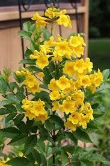

Yellow Tecoma (Tecoma Stans) is an evergreen shrub native to central tropical America, western India, the Andes, and South America. And spread in hot areas up to a height of 900 m above sea level. Its length ranges from 2 m to 4 m. The flowers are tubular in shape, large yellow, found in large, dense terminal gatherings (inflorescences) and appear in spring and autumn, and the fruit is a long box (horn) up to 12 cm long and blooms when the seeds ripen, leaves are light green serrated edges, planted for the beauty of its flowers.